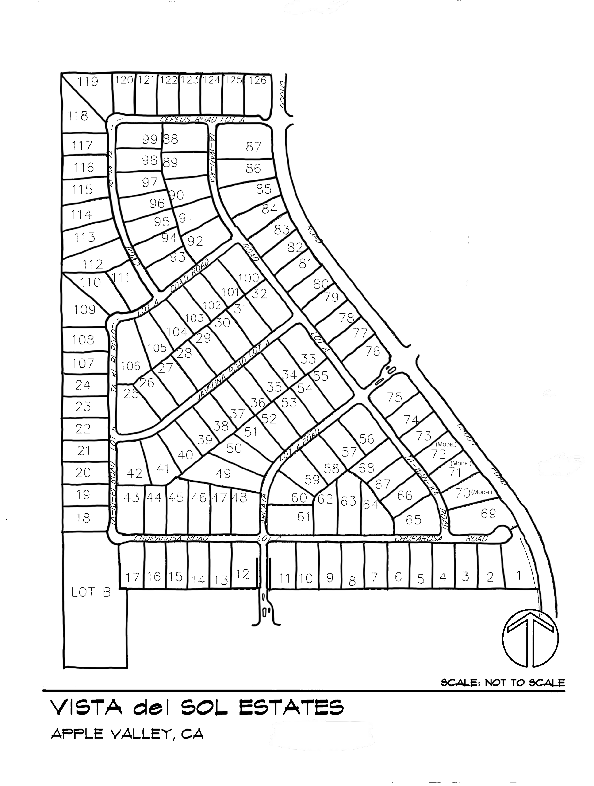

Vista Del Sol Estates
Interactive Community Lot Map
Apple Valley, California
Search by lot number or address
Search
+
−
Reset View

Legend
Lot boundaries shown on the traced base map
Hovered or selected lot highlight
Search result
102
Lot number shown on the map